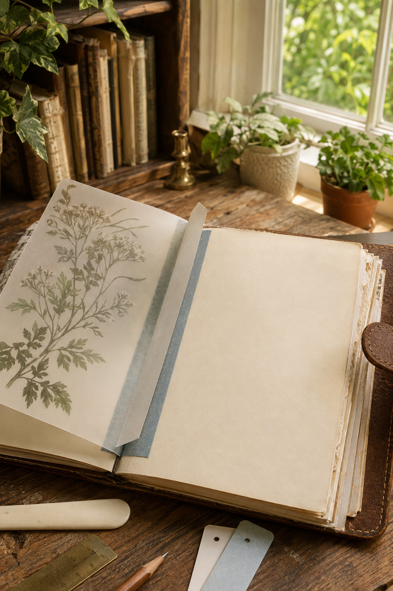

A tip-in adds a page where there was no page before. It can hold vellum, a photograph, a letter, or a piece of art that you want to lift and read beneath. A washi hinge is the quickest version, but tape placed directly on an old journal page may stain, lift fibers, or lose its grip.
This method adds a narrow paper guard first. The guard carries the tape, so the tip-in can be removed later with less risk to the journal.
Test the materials
Choose a light tip-in: vellum, thin drawing paper, a small photograph, or paper below about 160 gsm. Heavy cardstock pulls against the hinge and needs a stronger sewn or fabric attachment.
Test the washi on a scrap of similar paper. Leave it for ten minutes, peel it back, and check for oily marks or torn fibers. Decorative tape varies widely; pretty is not the same as archival or strong.
Make the removable guard
Cut a strip of plain paper 18–25 mm wide and slightly shorter than the tip-in. Fold it lengthwise. Slip one half around the edge of the journal page like a narrow sleeve. Do not glue it to the page.
If the guard slides too easily, use a slightly heavier paper or make the fold sharper. It should grip gently without denting the journal page.
Build the washi hinge
Align the tip-in beside the guard with a 1–2 mm gap. Lay one long strip of washi so half covers the tip-in and half covers the outer face of the guard. Turn the assembly over and add a second strip across the back.
The tiny gap is important. Without it, the paper layers collide at the fold and the tip-in refuses to lie flat.

Fit the assembly to the journal
Slide the guard over the journal page edge. Open and close the tip-in slowly. It should turn without pulling the base page and rest inside the journal rather than extending beyond the cover.
If it sags, shorten or lighten the tip-in. If it springs upward, widen the hinge gap slightly. Avoid solving either problem with more tape; extra layers make the fold stiffer.
Use both sides of the reveal
The tip-in creates three useful surfaces: its front, its back, and the journal page underneath. Keep one quiet. For example, place a translucent botanical image on the front, one short note on the back, and longer writing underneath.
Vellum is especially effective because it changes what is already on the page. Before attaching it, move the sheet over the spread and watch which image or handwriting becomes softly veiled. Let that relationship choose the position.
Remove it without damage
Support the journal page with one hand while sliding the paper guard away from the edge. Pull the guard parallel to the page, not upward. The journal remains untouched, and the complete tip-in can be stored or moved to a different spread.
Do not use this method on brittle book paper, unique documents, or anything of historical value. For ordinary creative journals, it is a flexible way to experiment without making every decision permanent.
Make one sample from scraps first and write the tape brand on the guard. Months later, you will know which tapes stayed clean and which ones need replacing.
Discover more gentle journal constructions in the Sentimentalica journal.